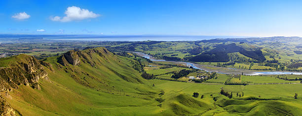

Reserva Particular do Patrimônio Natual Encontro das Águas
Informações Sobre a RPPN:
RPPN é uma modalidade de Unidade de Conservação de domínio privado (pessoa física ou jurídica), gravada com perpetuidade na matrícula do imóvel e sua criação não afeta a titularidade do imóvel.
O principal objetivo de uma RPPN é conservar a diversidade biológica.
Contribuem para a ampliação das áreas protegidas no país;
Apresentam índices altamente positivos para a conservação, principalmente quanto à manutenção de serviços ecossistêmicos;
São facilmente criadas em relação às outras categorias de UC;
Possibilitam a participação da iniciativa privada no esforço nacional de conservação;
Contribuem para a proteção da biodiversidade dos biomas paranaenses.
.
VÍDEO MOSTRANDO a RPPN:
.
.
.
.
.
.
.